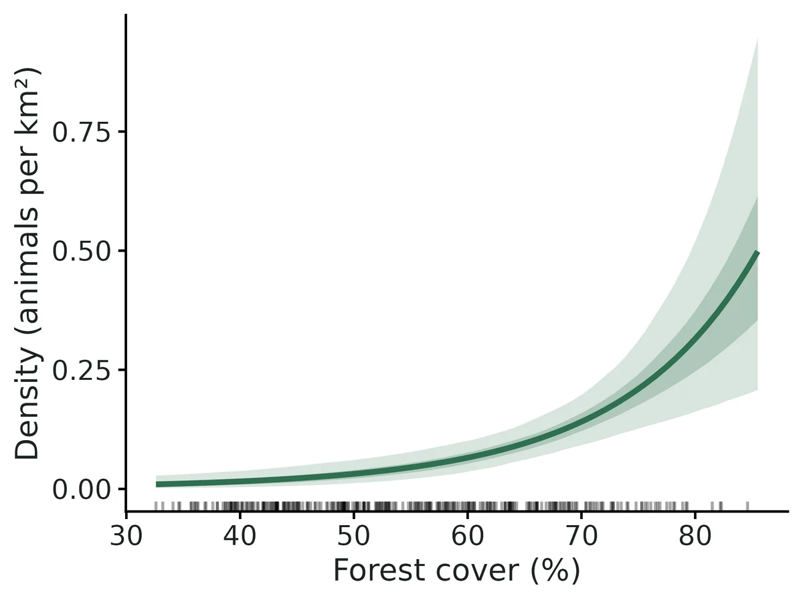
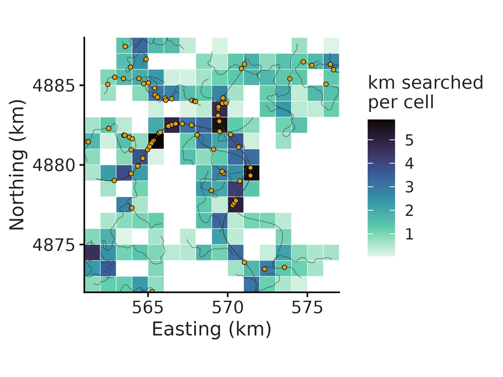
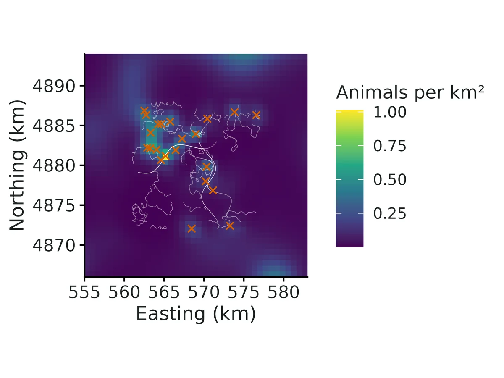
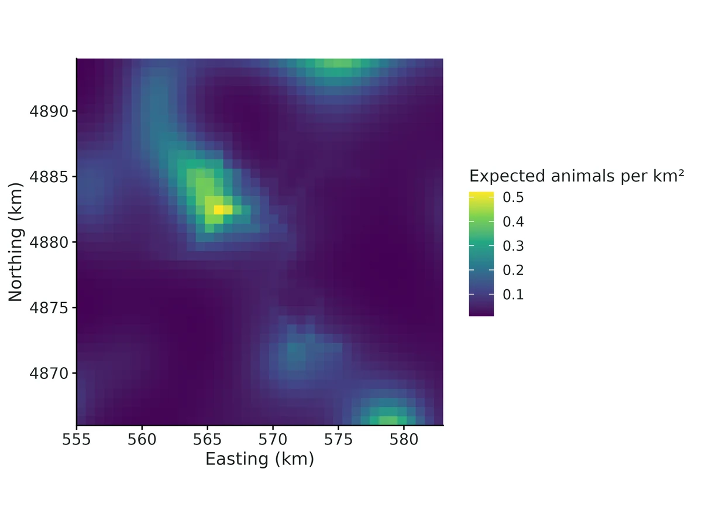

Search-encounter SCR (scat-detection dogs, snow-tracking, transect searches for genetic samples)
How many animals live in the study area and at what density, when individuals are identified from genetic samples found along search routes? Is density higher in some habitats (e.g. forest cover)? Do some search conditions (an experienced dog team, fresh snow) find more samples per km searched? The model also gives the spatial scale of space use (sigma, and a 95% home-range area) and the sample-encounter rate per km of search.
Is this the right analysis?
Use it when
Individuals identified from noninvasive genetic samples (scats, hair, feathers, urine in snow) found along recorded search routes (GPS tracks of detection-dog teams, snow-tracking, walked transects) rather than at fixed traps; question is density / abundance, how density relates to habitat, and how search conditions affect detection, with uneven search effort.
Not for
Fixed traps, cameras or hair snares (use scr); unidentified detections (use occupancy or distance sampling); open populations across years (use scr-open); searches without GPS/effort records (effort cannot be reconstructed, results will be biased where searching was concentrated).
The data you need
GPS track log of every search (track_id, x, y; projected metres) with an occasion per track, genotyped sample table (individual ID + coordinates, ideally track ID), habitat grid with density covariates (optional), track-level detection covariates (team, snow) (optional).
What the example's main data file looks like:
| track_id | gps_time | utm_e | utm_n |
|---|---|---|---|
| T001 | 2025-06-12T07:34:35Z | 568304.8 | 4883730 |
| T001 | 2025-06-12T07:35:35Z | 568266.6 | 4883762.3 |
| T001 | 2025-06-12T07:36:35Z | 568216.6 | 4883760.2 |
| T001 | 2025-06-12T07:37:35Z | 568182.5 | 4883796.7 |
| T001 | 2025-06-12T07:38:35Z | 568140 | 4883823.1 |
Not sure? Use the finder to compare modules.
The worked example
Fisher density from a scat-detection-dog survey with GPS-logged search routes (search-encounter SCR, simulated data with known truth)
The question: How many fishers live in the study area and at what density, is density higher where there is more forest, and do experienced dog teams find more scats per km searched?
The data are simulated, so the true answer is known and the analysis can be checked against it.
What the researcher typed
I ran a scat-detection-dog survey for fishers in the western Oregon Cascades in summer 2025: 36 search routes in three monthly sessions, each logged by GPS (search_tracks_gps.csv), with a field sheet per route saying which dog team searched and whether it was one of our experienced teams (track_field_sheet.csv). The scats and their genotypes are in fisher_scats.csv (blank fisher_id = failed genotype). I also have forest cover on a 700 m grid (habitat_grid.csv). Please estimate fisher density and abundance, tell me whether density is related to forest cover, and whether experienced teams find more scats per km. I'd like a report and figures for a paper.
Run it yourself
Download the example data below and unzip it.
Open the unzipped folder in Claude Code (see Install).
Paste the prompt above. The agent checks the files, writes a plan, runs planted truth, fits the model and writes the report. You can compare your results with the ones below.
Contains search_tracks_gps.csv, track_field_sheet.csv, fisher_scats.csv, habitat_grid.csv, the settings file (config.yaml), a description of the data and a step-by-step walkthrough.
Study design details
| searched region km | 16 x 16 |
|---|---|
| buffer m | 6000 |
| state space km2 | 784 |
| mask spacing m | 700 |
| mask pixels | 1600 |
| n occasions | 3 |
| n routes | 36 |
| routes per occasion | 12 |
| route km | 4.0-10.7 |
| total km searched | 246.7 |
| km experienced teams | 100.5 |
| km newer teams | 146.2 |
| road bias | 0.4 |
| cov road corr | 0.3 |
| cell size m | 1000 |
| detector cells | 158 |
| search units | 291 |
| scats collected | 116 |
| scats failed genotype | 35 |
| scats genotyped | 81 |
| individuals identified | 22 |
| individuals spatially recaptured | 20 |
| engine | nimble (3 chains x 40000 iter, 10000 burn-in); compare_engines secr_cells |
Results from the example data

What this means
- Density was estimated at 0.070 (95% CrI 0.045 to 0.10) animals per km², i.e. 7.04 per 100 km2. Over the 784 km² state space (the searched area plus a buffer), that is 54.7 (95% CrI 38.0 to 76.0) animals, of which 22 (40%) were identified from samples.
- The spatial scale of space use, sigma, was 1561 (95% CrI 1345 to 1828) m. If space use is a circular bivariate normal around each activity centre, 95% of an animal's activity falls within 3821 m of its centre, a home-range area of about 46 (95% CrI 34 to 63) km²; treat this as an index of ranging scale.
- Encounter rate: a searcher covering 1 km right at an animal's activity centre finds on average 0.18 (95% CrI 0.11 to 0.27) of its samples (at the reference level of the detection covariates); a long straight search route passing through the activity centre would yield 0.70 (95% CrI 0.47 to 1.0) samples of that animal.
- Detection: 'Experienced dog team' (1 vs 0) multiplied the number of samples found per km searched by 1.65 (95% interval 1.04 to 2.58); per-km encounter rate at the activity centre 0.30 with Experienced dog team = 1 versus 0.18 with Experienced dog team = 0. This is a detection (search efficiency) effect, not a difference in where animals live.
- Density and Forest cover (%): each 1 SD (12 units) higher Forest cover (%) is associated with 155% higher density (rate ratio 2.55, 95% interval 1.60 to 4.20). Expected density is 0.015 per km² (0.0036 to 0.037) where Forest cover (%) = 39.6 (10th percentile of the state space) and 0.16 (0.10 to 0.23) where it = 71.6 (90th percentile).
- This is a correlation between density and habitat across the state space, not proof that the habitat causes higher density. Because search effort was modelled explicitly (km searched per cell), more samples in heavily searched areas are not mistaken for higher density.
More figures



Figures are the module's default publication figures, reduced for the web. The report also saves them as PDF and full-resolution PNG.
Planted truth at the example's design
Before trusting the example's results, the module was run on many simulated data sets with the same design and known true values. Each row is one quantity: did the method get it back? (What the thresholds are.)
Every quantity checked passed planted truth at this design.
| This example | 16 x 16 km area, 3 occasions x 12 dog-team routes (247 km searched), 22 fishers identified |
|---|---|
| Design the module was validated at | 16 x 16 km area, 3 occasions x 12 search tracks (about 250 km), typically 20-30 individuals |
The example matches the validated default design: the same searched area, 3 occasions x 12 tracks and about 250 km. At that design the Nimble fit passed every estimand on two independent replicate sets, with density +2.0% (coverage 0.94) and +6.7% (coverage 0.90). In sparser data (20-35 animals identified), the posterior mean of density and abundance ran 9-13% high while intervals still covered 0.90-0.94, and the example's 22 animals fall in that range, so report the interval as well as the point estimate.
These calls sit close to the pass/fail line. With another 100 simulated data sets they could come out the other way, so read them as “about at the limit” rather than as a clear pass or fail. Where the allowance is set by the noise floor, a quantity with a small true value can pass with a larger percentage bias than a quantity that fails. PASS there means the bias could not be told apart from simulation noise, not that the quantity is estimated better.
- detection_beta_experienced_team (✓ PASS): bias -9.4% against an allowance of ±10.2% (set by the simulation-noise floor (3 Monte Carlo SE)), so it used 92% of the allowance.
8 of 8 rows pass; 1 is borderline.
| Quantity | True value | Average estimate | Bias | Allowed bias | Coverage (needed) | Result |
|---|---|---|---|---|---|---|
| density_per_km2 | 0.1 | 0.105 | +4.8% | ±10.0% | 0.91 (0.885) | ✓ PASS |
| abundance | 78.6 | 82.1 | +4.4% | ±10.0% | 0.94 (0.885) | ✓ PASS |
| lambda0_per_km | 0.2 | 0.206 | +2.8% | ±10.0% | 0.95 (0.885) | ✓ PASS |
| sigma | 1,500 | 1,524 | +1.6% | ±10.0% | 0.96 (0.885) | ✓ PASS |
| home_range_area_95 | 42.4 | 44.1 | +4.2% | ±10.0% | 0.96 (0.885) | ✓ PASS |
| samples_per_track_through_centre | 0.752 | 0.775 | +3.1% | ±10.0% | 0.97 (0.885) | ✓ PASS |
| density_beta_forest | 0.5 | 0.511 | +2.2% | ±15.3%† | 0.97 (0.885) | ✓ PASS |
| detection_beta_experienced_team | 0.6 | 0.544 | -9.4% | ±10.2%† | 0.93 (0.885) | ✓ PASS ≈ borderline |
Limits that matter
- Sparse data: with 20-35 animals identified (here 22) and density CV ~0.2, the posterior MEAN of density and N ran 9-13% high in independent simulations (coverage nominal); here recovery bias was +4.8%. Report the posterior median (0.0697, N 54) and the secr ML estimate alongside the mean.
- Abundance refers to the whole 784 km2 state space; away from the routes density is extrapolated from the forest model (detection_map). Quote density rather than N alone.
- Search effort must be recorded: ignoring it more than doubled the apparent forest effect in simulations with road-following routes through forest.
- 1 km cells (0.64 sigma) inflate sigma by about 3% relative to exact locations.
- Power at ~250 km of searching: 0.57 for the forest effect (rate ratio 1.65 per SD) and 0.66 for the team effect; ~400 km needed for ~0.75 power on forest.
- Untested assumptions: closure over June-August, one sigma for both sexes, independent scats (no latrines), correct genotypes.
All known limits from the module's validation record
- Hard design, posterior-mean bias of density (+10.2%, gate FAIL by 0.2 pp) and N (+9.7%). This comes from right-skewed posteriors when effort is sparse and road-concentrated. The ML engine on the same replicates is unbiased (-0.8%). Bayesian coverage is nominal (0.94). For sparse designs, report the posterior median as well, or cross-check with
secr_cells. Null habitat effect + effort correlated with the covariate (hard design, Nimble): gate FAILS for N/density (+24%/+25%), with 3/100 not converged.
- With beta = 0 truth and searching concentrated in high-forest ground, low-forest ground is barely searched.
- In some replicates the posterior of beta_forest extends strongly negative. The model then extrapolates high density into the unsearched low-forest part of the state space, and N's posterior gets a very long right tail (one replicate had N-hat 558 vs 65).
- The false-positive rate for the habitat effect is still 0.02, and coverage of all estimands is >= 0.96.
- ML (
secr_cells) on the same design passes (+4%). - Practical rule: when the
detection_mapshows large unsearched areas of distinct habitat, N for the whole state space is an extrapolation. Report density within the searched region, or extend the searches into that habitat.
- Discretisation. Cells of about 0.67 sigma inflate sigma by about 3% (0.5 posterior SD) relative to exact locations. Keep
cell_size<= sigma; the report warns otherwise. - Very low effort (< about 100 km, < 15 individuals): posterior means of N and density are biased upward (+20%), with occasional non-convergence (power table).
effort_model: visitsbiases density by about +14% at the hard design (section 3b).observation: bernoulliis implemented but has not been recovery-validated.secr_transect(exact locations) is the most faithful to the data but takes about 45 min per fit at the default design. It is a cross-check, not the default.- Assumes a closed population, a shared sigma (no sex differences) and independent samples. Latrine clustering shows up as
disp_samplesin the PPC but is not modelled. No NumPyro engine was built (it was optional in the brief).
How this module was validated
- 100 simulated datasets per design, fitted with Nimble (3 chains x 20,000 iterations, 5,000 burn-in). To pass, bias had to be within 10% (or 3 Monte Carlo SE), coverage (how often the 95% interval contained the truth) at least 0.885, and at least 90% of fits had to converge.
- Default design: all 8 estimands passed (density +2.0%, coverage 0.94; 100/100 converged). Maximum likelihood of the same model (secr cells) also passed, and a second replicate set passed with the current default detector placement.
- Hard design (two-thirds of the effort, 80% of it on roads through good habitat): Nimble density was +10.2% and failed by 0.2 percentage points. Maximum likelihood on the same data was unbiased (-0.8%).
- Negative control: ignoring search effort gave density -38.2% and more than doubled the forest effect (+122%, coverage 0.42). Counting only visits per cell still biased density by +14.5%.
- False-positive rate with no true effects: 0.00-0.02 for the forest effect and 0.04 for the team effect.
- Cross-check on 6 datasets against secr with the same cells and with exact sample locations along the tracks: density and both coefficients agreed within 0.34 posterior SD. Sigma came out about 3% larger with 1 km cells.
- Power for a 0.5-per-SD forest effect was about 0.74 only at about 420 km of searching. A separate verifier agent with its own simulator found that every estimand passed at a dense design, but density was +12.6% at a sparse one (about 33 animals). Maximum likelihood passed on the same data.
Every run uses the acceptance gate described on the validation page. The full record follows, section by section, exactly as kept in the module's VALIDATION.md.
Settings and pass/fail rule used for every run
Status after independent verification (2026-10-20): the default design PASSES the acceptance gate with the current default detector_location: centroid, on two independent replicate sets (seeds 1 and 7). Limits:
- At sparse designs (20-35 animals identified, posterior CV of density >= 0.23) the Nimble posterior MEAN of density and N is 9-13% high (gate FAIL on bias), while coverage stays 0.90-0.94 and ML (secr_cells) passes.
- The builder's original runs (sections 1-7) used detector locations at the cell centre, which was the default then. With a second replicate set, that setting failed the default design on home_range_area_95 (+10.3%), so the default was changed. See "Independent verification" at the end of this file.
All runs used bin/Rscript core/run.R recover scr-search ... --nsim 100 --cores 16 on njobvu via bin/ejob. Configs are in dev/scr-search/*.yaml and outputs in results/scr-search/recover_*/. Recovery uses fast_settings: Nimble with 3 chains x 20000 iterations, 5000 burn-in and up to 800 kept draws per chain. Each replicate took about 290 s on one core, so a 100-replicate run on 16 cores took about 30 min. The secr cell engine took about 75 s per replicate.
Gate (core recovery_gate): |bias| <= max(10% of truth, 3 MC SE), 95% interval coverage >= 0.885 (binomial lower bound for nsim = 100), and >= 90% of replicates converged (R-hat < 1.05).
Simulated designs
Default (module defaults):
- A 16 x 16 km searched area with a 6 km buffer, giving a 784 km2 state space and a 700 m mask.
- True density 0.10 per km2 (N about 79), lambda0 = 0.20 samples per km, sigma = 1500 m.
- Density effect: forest, beta 0.5 per SD. Detection effect: experienced dog team, beta 0.6 (rate ratio 1.8).
- 3 occasions x 12 search tracks of 4-10 km, about 250 km in total. 30% of tracks follow 3 winding roads; the rest are correlated random walks.
- 1 km detector cells.
- Samples are deposited continuously along the GPS path in 50 m pieces with 10 m location jitter. The cell discretisation is therefore tested, not assumed.
- Typical data set: about 20-30 individuals and about 80 samples.
Hard: tracks_per_occasion: 8 (24 tracks, about 2/3 of the default effort), road_bias: 0.8 (80% of searching on roads) and cov_road_corr: 0.7. Roads run through high-forest ground, so search effort is strongly concentrated where density is high. This is the classic setting in which effort that is not modelled masquerades as a habitat effect.
1. Default design, Nimble engine (nsim = 100)
| estimand | truth | mean est | rel. bias | bias MC SE | RMSE | coverage | power | conv | gate |
|---|---|---|---|---|---|---|---|---|---|
| density_per_km2 | 0.1 | 0.102 | +2.0% | 0.0021 | 0.021 | 0.94 | 1.00 | PASS | |
| abundance | 78.6 | 79.9 | +2.0% | 1.5 | 15 | 0.93 | 1.00 | PASS | |
| lambda0_per_km | 0.2 | 0.202 | +1.0% | 0.0042 | 0.042 | 0.98 | 1.00 | PASS | |
| sigma | 1500 | 1540 | +2.5% | 11 | 110 | 0.97 | 1.00 | PASS | |
| home_range_area_95 | 42.4 | 45 | +6.2% | 0.64 | 6.9 | 0.97 | 1.00 | PASS | |
| samples_per_track_through_centre | 0.752 | 0.767 | +2.0% | 0.014 | 0.14 | 0.96 | 1.00 | PASS | |
| density_beta_forest | 0.5 | 0.521 | +4.2% | 0.023 | 0.23 | 0.97 | 0.63 | 1.00 | PASS |
| detection_beta_experienced_team | 0.6 | 0.589 | -1.8% | 0.026 | 0.26 | 0.95 | 0.73 | 1.00 | PASS |
No replicates failed, and all 100 converged. Across replicates the ratio N-hat / N had a median of 0.99, with a 5-95% range of 0.72-1.42.
The same design was fitted by maximum likelihood of the same cell model (engine: secr_cells), also with nsim = 100:
| estimand | truth | mean est | rel. bias | bias MC SE | coverage | gate |
|---|---|---|---|---|---|---|
| density_per_km2 | 0.1 | 0.0972 | -2.8% | 0.002 | 0.97 | PASS |
| abundance | 78.6 | 76.2 | -2.9% | 1.4 | 0.95 | PASS |
| lambda0_per_km | 0.2 | 0.19 | -4.9% | 0.0041 | 0.98 | PASS |
| sigma | 1500 | 1530 | +2.0% | 11 | 0.99 | PASS |
| home_range_area_95 | 42.4 | 44.3 | +4.6% | 0.62 | 0.99 | PASS |
| samples_per_track_through_centre | 0.752 | 0.726 | -3.5% | 0.014 | 0.96 | PASS |
| density_beta_forest | 0.5 | 0.51 | +2.0% | 0.022 | 0.97 | PASS |
| detection_beta_experienced_team | 0.6 | 0.632 | +5.3% | 0.027 | 0.95 | PASS |
2. Hard design: sparse effort concentrated on roads in high-density habitat (nsim = 100)
Nimble engine:
| estimand | truth | mean est | rel. bias | bias MC SE | RMSE | coverage | power | conv | gate |
|---|---|---|---|---|---|---|---|---|---|
| density_per_km2 | 0.1 | 0.11 | +10.2% | 0.0031 | 0.032 | 0.94 | 1.00 | FAIL (bias) | |
| abundance | 78.6 | 86.2 | +9.7% | 2.2 | 23 | 0.94 | 1.00 | PASS | |
| lambda0_per_km | 0.2 | 0.208 | +4.2% | 0.0039 | 0.04 | 0.95 | 1.00 | PASS | |
| sigma | 1500 | 1540 | +2.4% | 11 | 110 | 0.94 | 1.00 | PASS | |
| home_range_area_95 | 42.4 | 45 | +6.1% | 0.61 | 6.6 | 0.94 | 1.00 | PASS | |
| samples_per_track_through_centre | 0.752 | 0.793 | +5.5% | 0.014 | 0.14 | 0.97 | 1.00 | PASS | |
| density_beta_forest | 0.5 | 0.481 | -3.8% | 0.031 | 0.31 | 0.97 | 0.42 | 1.00 | PASS |
| detection_beta_experienced_team | 0.6 | 0.565 | -5.8% | 0.021 | 0.22 | 0.98 | 0.77 | 1.00 | PASS |
Same design and replicates fitted by ML (secr_cells):
| estimand | truth | mean est | rel. bias | bias MC SE | coverage | gate |
|---|---|---|---|---|---|---|
| density_per_km2 | 0.1 | 0.0992 | -0.8% | 0.0026 | 0.96 | PASS |
| abundance | 78.6 | 77.8 | -1.3% | 1.8 | 0.94 | PASS |
| lambda0_per_km | 0.2 | 0.197 | -1.3% | 0.0038 | 0.96 | PASS |
| sigma | 1500 | 1530 | +1.8% | 10 | 0.96 | PASS |
| home_range_area_95 | 42.4 | 44.1 | +4.1% | 0.58 | 0.96 | PASS |
| samples_per_track_through_centre | 0.752 | 0.752 | -0.0% | 0.013 | 0.96 | PASS |
| density_beta_forest | 0.5 | 0.547 | +9.4% | 0.03 | 0.99 | PASS |
| detection_beta_experienced_team | 0.6 | 0.599 | -0.2% | 0.022 | 0.96 | PASS |
Reading: with sparse, road-concentrated effort, both engines recover the habitat effect on density when effort is modelled: beta bias is -3.8% (Nimble) and +9.4% (ML), with coverage of 0.97-0.99.
The Nimble posterior mean of density and N is pulled up by right-skewed posteriors in replicates with few spatial recaptures. The median of N-hat / N is 1.06, while the mean is 1.10, and 5% of replicates exceed 1.70. The ML point estimate on the same data is unbiased (-0.8%). Coverage of the Bayesian intervals stays nominal (0.94). The density failure is by 0.2 percentage points beyond the 10% band (bias 0.0102 vs limit 0.0100).
3. Negative control: ignoring search effort (hard design, nsim = 100)
settings: {effort_model: uniform}: every cell of the searched rectangle is treated as equally searched, as when a study has no GPS tracks.
| estimand | truth | mean est | rel. bias | coverage | gate |
|---|---|---|---|---|---|
| density_per_km2 | 0.1 | 0.0618 | -38.2% | 0.27 | FAIL |
| abundance | 78.6 | 48.0 | -38.9% | 0.15 | FAIL |
| lambda0_per_km | 0.2 | 0.422 | +111% | 0.09 | FAIL |
| sigma | 1500 | 1300 | -13.5% | 0.39 | FAIL |
| home_range_area_95 | 42.4 | 32.0 | -24.4% | 0.39 | FAIL |
| samples_per_track_through_centre | 0.752 | 1.35 | +79% | 0.10 | FAIL |
| density_beta_forest | 0.5 | 1.11 | +122% | 0.42 | FAIL |
The gate fails decisively, so the check can fail. Ignoring effort more than doubles the apparent forest effect on density, because samples pile up along roads that run through forest. The same data with effort modelled give beta = 0.481 (section 2). This is the core reason the module exists: record and model search effort.
3b. Sensitivity: effort = number of tracks through a cell (hard design, nsim = 100)
settings: {effort_model: visits}: every track that enters a cell counts as one standard visit, and the km walked inside the cell is ignored.
| estimand | truth | mean est | rel. bias | coverage | gate |
|---|---|---|---|---|---|
| density_per_km2 | 0.1 | 0.115 | +14.5% | 0.91 | FAIL (bias) |
| abundance | 78.6 | 89.6 | +14.1% | 0.93 | FAIL (bias) |
| lambda0_per_km | 0.2 | 0.163 | -18.7% | 0.84 | FAIL |
| sigma | 1500 | 1530 | +2.2% | 0.96 | PASS |
| samples_per_track_through_centre | 0.752 | 0.617 | -17.9% | 0.81 | FAIL |
| density_beta_forest | 0.5 | 0.442 | -11.6% | 0.94 | PASS |
| detection_beta_experienced_team | 0.6 | 0.553 | -7.9% | 0.94 | PASS |
A crude effort measure (visits) is far better than ignoring effort, but it still biases density by about 14%. Use track_length, the default; visits is only for studies where track lengths per cell cannot be reconstructed.
4. False-positive rate (both covariate effects = 0, nsim = 100)
"power" here is the proportion of 95% intervals excluding 0.
| design / engine | P(forest effect "detected") | P(team effect "detected") | gate on other estimands |
|---|---|---|---|
| default, Nimble | 0.00 | 0.04 | all PASS (density +3.1%, cov 1.00) |
| hard (effort correlated with covariate), Nimble | 0.02 | 0.04 | FAIL: N +23.8%, density +25%, 3/100 not converged (see Known limits) |
| hard, ML secr_cells | 0.01 | 0.06 | all PASS (density +4.1%, cov 0.94) |
The false-positive rate is at or below 0.05 for both effects with Nimble, so modelled effort does not create spurious habitat effects even when effort is correlated with the covariate.
5. Cross-check against independent implementations
dev/scr-search/crosscheck.R fitted 6 simulated default-design data sets (seeds 101-106) with three engines:
- Nimble marginal cell model (default settings).
- secr ML of the same cell model (
secr_cells). - secr ML with every GPS track as a
transectdetector and samples at their exact locations (secr_transect: no cells, no local evaluation, different software, Efford 2011).
Differences are in units of the Nimble posterior SD, as mean (max |.|) over 6 data sets:
| estimand | Nimble - secr_cells | Nimble - secr_transect | secr_cells - secr_transect |
|---|---|---|---|
| density_per_km2 | 0.16 (0.20) | 0.06 (0.18) | -0.10 (0.19) |
| abundance | 0.16 (0.22) | 0.05 (0.22) | -0.11 (0.22) |
| lambda0_per_km | 0.20 (0.34) | -0.03 (0.21) | -0.23 (0.40) |
| sigma | 0.04 (0.10) | 0.49 (0.73) | 0.45 (0.71) |
| home_range_area_95 | 0.07 (0.14) | 0.51 (0.73) | 0.43 (0.69) |
| density_beta_forest | 0.06 (0.18) | 0.08 (0.24) | 0.02 (0.14) |
| detection_beta_experienced_team | -0.12 (0.20) | -0.13 (0.20) | -0.01 (0.10) |
Mean estimates over the 6 sets (truth: D = 0.10, sigma = 1500):
- Nimble: D = 0.090, sigma = 1570.
- secr_cells: D = 0.087, sigma = 1570.
- secr_transect: D = 0.089, sigma = 1520.
The Nimble engine agrees with ML of the same likelihood to within 0.34 SD on every estimand. Against the continuous transect likelihood, density, N and both coefficients agree within 0.24 SD. Sigma is about 3% (0.5 SD) larger with 1 km cells than with exact sample locations, for both engines. That is the discretisation effect expected with cells of 0.67 sigma, and it does not propagate to density. Run times per data set (median):
- Nimble: 297 s (40k iterations x 3 chains).
- secr_cells: 80 s.
- secr_transect: 2785 s.
The example fit also runs compare_engines: [secr_cells] (figure engine_comparison). Nimble and ML agree on every estimand: D 0.070 vs 0.068, N 54.5 vs 53.3, sigma 1536 vs 1531, beta_forest 0.95 vs 0.96.
6. Example fit
The example is a simulated fisher scat-dog survey in the real-data formats:
- GPS log, one row per fix with timestamps.
- Field sheet per route, with dog team.
- Scat table with 30% failed genotypes.
- 700 m habitat grid with forest_pct, in UTM.
Truth: D = 0.10, N = 63, sigma = 1500, lambda0 = 0.20, beta_forest = 0.5, beta_team = 0.6. Data: 22 individuals, 81 genotyped scats (35 failed) and 247 km searched.
Estimates:
- D = 0.070 (0.044-0.101).
- N = 54.5 (39-76).
- sigma = 1536 (1319-1797).
- lambda0 = 0.18 (0.12-0.27).
- beta_forest = 0.95 (0.49-1.45).
- beta_team = 0.50 (0.04-0.96).
All truths are inside the 95% intervals. Max R-hat is 1.001 and min bulk ESS is 3110, which meets the real-data standard of < 1.01 and >= 400. Posterior predictive p-values are 0.31-0.84. The report's interpretation sentences were checked against the estimates table (rate ratios, percentiles, the 0.30 vs 0.18 encounter rate by team, 22 of 54.5 = 40% identified). All 14 figures were inspected.
7. Power over search effort (default design, nsim = 50 per level)
core/run.R power scr-search --vary tracks_per_occasion=4,8,12,20; results in results/scr-search/power_tracks/.
| tracks per occasion (km total) | power forest beta = 0.5 | power team beta = 0.6 | density rel. bias | density coverage | 95% CI width, density |
|---|---|---|---|---|---|
| 4 (~85 km) | 0.39 | 0.22 | +21.5% | 0.96 | 0.20 |
| 8 (~170 km) | 0.35 | 0.46 | +3.2% | 0.96 | 0.096 |
| 12 (~250 km, default) | 0.42 | 0.66 | +14.9% | 1.00 | 0.108 |
| 20 (~420 km) | 0.74 | 0.90 | +0.6% | 0.94 | 0.070 |
Reading:
- Precision of density improves steadily with effort.
- Power for a 0.5-SD habitat effect reaches about 0.75 only at about 400 km of searching.
- With only about 85 km (4 tracks per occasion), 4 of 50 replicates did not converge and the posterior mean of density is +22% (right-skewed posteriors). That is below the design this module recommends.
- The +14.9% at 12 tracks (nsim = 50) is driven by a few replicates with very wide, right-skewed posteriors. Its MC SE is 5.7% (2.6 MC SE from 0). The nsim = 100 run at the same design (section 1) gives +2.0%, with a mean N-hat / N of 1.02.
- Treat posterior means of N and density at low effort with caution (Known limits).
Selftest
core/run.R selftest scr-search (4 reps) passes the contract: simulate, fit, estimates and diagnostics shapes are correct. The coverage flags in that run are not meaningful with 4 reps.
Independent verification (2026-10-20, separate verifier agent)
Scripts: dev/scr-search/verify/. Outputs: results/scr-search/verify/. Every run used nsim = 100 at module fast_settings on njobvu via bin/ejob -c 16, with core summarise_recovery() + recovery_gate() and unchanged thresholds (bias <= max(10%, 3 MC SE); coverage >= 0.885; >= 90% converged).
Literature and code check
Likelihood (
dSearchMarg) checked term by term against the marginal data-augmentation SCR likelihood:- detected animals: sum over pixels of pi_g exp(-Lambda_g) prod lambda^y;
- plus psi^n (psi p0 + 1 - psi)^(M-n), with p0 = sum_g pi_g exp(-Lambda_g).
- Effort enters as an offset: lambda = lambda0 E_u exp(alpha'w) k(d). This is the discretised hazard integrated along the track (Royle et al. 2011; Efford 2011).
- secr transect normalisation: secr normalises the kernel along the line, and lambda0 cancels in the normalised expression (Efford, "Polygon and transect detectors in secr"). So lambda0_secr = lambda0_per_km * sqrt(2 pi) sigma, which is what
ss_pdrawsandsecr_engine.Ruse. Derived quantities checked:
- 95% home range = pi chi2_0.95(2) sigma^2;
- samples per track through the centre = lambda0 sqrt(2 pi) sigma;
- N = n + Bin(M - n, ...);
- D = psi M / area, the expected density, which matches the simulator's truth.
- Local evaluation is exact in practice: P(never detected) at the true parameters was identical to 4 decimals with and without truncation on 3 replicates (
local_check.R).
Independent planted truth (sim_indep.R, no module code)
The simulator writes field files (GPS fixes with time stamps in shuffled row order, route sheet, sample table, habitat grid), and the module's read_data() reads them. Design and values differ from the defaults:
- 24 x 18 km searched area, 10 km buffer (1672 km2 state space), 1 km habitat grid.
- Continuous elevation covariate, beta = -0.6 per SD.
- Activity centres drawn on a 100 m grid.
- 4 occasions x 9 routes of 6-14 km; 55% follow valleys.
- GPS fixes every 30 m with 4 m noise.
- Continuous route-level
snow_days, alpha = -0.15 per day. - Samples deposited on 15 m pieces with 15 m jitter; 12% failed genotypes.
- 1.5 km cells (0.6 sigma), D = 0.04 per km2, sigma = 2500 m, lambda0 = 0.25 per km.
- Median 33 animals identified per replicate.
The lambda0 truth includes the 0.88 genotyping-success thinning: the first pass omitted it and is re-gated in summary_gate_fixedtruth.csv.
| run (nsim 100) | density | N | sigma | lambda0 | beta_elev | beta_snow | gate |
|---|---|---|---|---|---|---|---|
| main, Nimble, centre | +10.4% (cov 0.92) | +8.7% (0.94) | +2.4% (0.94) | -3.3% (0.89) | +1.0% (0.96, power 0.65) | -1.3% (0.97, power 0.98) | FAIL density bias; samples_per_track cov 0.88 |
| main, Nimble, centroid | +12.6% (0.90) | +10.9% (0.94) | +0.5% (0.95) | -1.5% (0.89) | +0.6% (0.97) | -1.5% (0.98) | FAIL density, N bias |
| main, ML secr_cells | +3.3% (0.92) | +1.9% (0.93) | +1.9% (0.94) | -4.6% (0.90) | -5.1% (0.98) | -1.6% (0.97) | PASS all |
| dense (D = 0.08, ~66 animals), centre | +5.7% (0.92) | +4.5% (0.99) | +3.7% (0.84) | -6.0% (0.90) | +4.7% (0.99) | -1.6% (0.97) | FAIL sigma and home-range coverage |
| dense, centroid | +7.1% (0.93) | +6.0% (0.99) | +2.1% (0.92) | -4.8% (0.92) | +4.2% (0.99) | -1.7% (0.98) | PASS all |
| null (both effects 0), centre | +11.9% | +10.4% | +3.9% | -3.8% | FP rate 0.06 | FP rate 0.07 | FP rate nominal; density bias FAIL |
negative control (effort ignored, uniform) | -28% (0.44) | -30% (0.33) | -13% | +129% (truth corrected for genotyping) | -104% (cov 0.42) | n/a | FAIL decisively (64/100 converged) |
Paired on the same replicates, the Nimble posterior mean minus the ML estimate was +0.28 posterior SD for density and N, against <= 0.14 SD for every other estimand. Nimble / ML median ratio for N was 1.06.
Reading:
- The sparse-design bias is the right skew of the posterior of N under the flat data-augmentation prior. It is not a likelihood error: ML of the same cell likelihood is unbiased on the same data, the bias halves when density doubles, and coverage stays nominal.
- Cell-centre detector locations inflate sigma (+2.4% to +4.5%) and push coverage below the bound once data are rich (dense run). The length-weighted track centroid removes most of this.
Re-running the builder's recover command
core/run.R recover scr-search --config dev/scr-search/default.yaml --seed 1reproduced section 1 exactly: density +2.0%, coverage 0.94, all PASS.- Seed 7 (a new set of 100 replicates, same design):
| estimand | centre (old default) | centroid (new default) |
|---|---|---|
| density_per_km2 | +5.8% (cov 0.92) PASS | +6.7% (0.90) PASS |
| abundance | +3.8% (0.99) PASS | +4.6% (0.97) PASS |
| lambda0_per_km | -2.7% (0.97) PASS | -1.7% (0.95) PASS |
| sigma | +4.5% (0.92) PASS | +3.8% (0.94) PASS |
| home_range_area_95 | +10.3% (0.92) FAIL | +8.9% (0.94) PASS |
| samples_per_track_through_centre | -0.0% (0.96) PASS | +0.4% (0.97) PASS |
| density_beta_forest | -7.5% (0.92, power 0.44) PASS | -7.9% (0.93, power 0.45) PASS |
| detection_beta_experienced_team | -6.3% (0.96, power 0.67) PASS | -6.2% (0.95, power 0.69) PASS |
- With centroid on seed 1 (
verify/default_centroid), everything passes: density +3.3% (0.94), sigma +1.4%, home range +3.9%. - Hard design with centroid (
verify/hard_centroid): density +13.2% and N +12.6% FAIL, as with centre (+10.2% / +9.7%). Every other estimand passes, with coverage 0.94-0.99. - Power at the default design depends on the seed: forest 0.44-0.63 and team 0.67-0.73 across the two replicate sets.
Usability
fitonexample/config.yaml(new default) gives:- D 0.070 (0.045-0.101), N 54.7 (38-76), sigma 1561 m, beta_forest 0.94, beta_team 0.50. All truths are covered.
- Max R-hat 1.001, min ESS 3250, PPC p 0.30-0.81.
- secr_cells agrees: D 0.068, N 53.3, sigma 1550.
Every interpretation sentence was recomputed from the estimates:
- 22/54.7 = 40%;
- exp(0.937) = 2.55, i.e. +155%;
- 2.448 x 1561 = 3821 m;
- team effect 1.65 (1.04-2.58), giving 0.18 vs 0.30 samples per km.
- Wording is non-causal for habitat, and detection is separated from density.
- Figures checked against
docs/FIGURES.md(scr family plus effort_map): all present (14). Inspected effort_map, density_surface, density_forest_pct, detection_function, engine_comparison and gof. Values match the estimates, with original units (km, %). Messy-data tests (
messy_test.R, 15 cases): every case gives a specific, actionable message. The cases were:- NA track or sample coordinates;
- misspelled track ID;
- missing route on the field sheet;
- wrong column names (the message lists the available columns);
- NA team or session;
- GPS jump;
- sample far from its track;
- case or space variants of genotype IDs;
- "yes/no" team (recoded, with a note);
- NA habitat covariate (dropped, with a note);
- units in ft.
Changes made by the verifier
detector_locationsetting added (prepare.R). Default changed tocentroid(module.R,prepare.R): each cell's detector sits at the length-weighted centroid of the track searched in it. Maps and cell-level covariates still use the geometric centre, and secr_cells uses the same location as Nimble. README and methods text updated.check_datamessages made more specific (io.R):- flags genotype IDs that differ only in case or spaces;
- flags samples more than a cell from their recorded track;
- names the track for NA coordinates, team or session;
- skips non-finite jumps;
- trims whitespace in IDs.
- Fit diagnostics now add a NOTE when the posterior CV of density is > 0.2. The note gives the posterior medians of density and N and the simulated bias of the posterior mean (
module.R). - Report: rate ratios printed to 3 significant digits, so "1.0 to 2.6" no longer hides a lower bound of 1.04; the validation sentence states the sparse-data caveat; detection_function legend placed at the bottom; engine_comparison tick labels thinned (
report.R). - Example re-fitted with the new default (
results/scr-search/example/). No core files changed.
Engine, references and full details
Engine: nimble (Bayesian marginal likelihood with local evaluation; default); secr (ML: tracks as transect detectors with exact locations, and the same cell model) as independent checks.
References
- Royle JA, Kéry M, Guélat J (2011) Spatial capture-recapture models for search-encounter data. Methods in Ecology and Evolution 2:602-611. doi:10.1111/j.2041-210X.2011.00116.x
- Thompson CM, Royle JA, Garner JD (2012) A framework for inference about carnivore density from unstructured spatial sampling of scat using detector dogs. Journal of Wildlife Management 76:863-871. doi:10.1002/jwmg.317
- Russell RE, Royle JA, Desimone R, Schwartz MK, Edwards VL, Pilgrim KP, McKelvey KS (2012) Estimating abundance of mountain lions from unstructured spatial sampling. Journal of Wildlife Management 76:1551-1561. doi:10.1002/jwmg.412
- Efford MG (2011) Estimation of population density by spatially explicit capture-recapture analysis of data from area searches. Ecology 92:2202-2207. doi:10.1890/11-0332.1
- Efford MG. secr: Spatially explicit capture-recapture models (R package, v5.5); detector types polygon, transect, polygonX, transectX ("secr-polygondetectors" vignette); SECRbook Appendix: area and transect search.
- Milleret C, Dupont P, Bonenfant C, Brøseth H, Flagstad Ø, Sutherland C, Bischof R (2019) A local evaluation of the individual state-space to scale up Bayesian spatial capture-recapture. Ecology and Evolution 9:352-363. doi:10.1002/ece3.4751
- Moqanaki EM, Milleret C, Tourani M, Dupont P, Bischof R (2021) Consequences of ignoring variable and spatially autocorrelated detection probability in spatial capture-recapture. Landscape Ecology 36:2879-2895. doi:10.1007/s10980-021-01283-x
- Royle JA, Chandler RB, Sollmann R, Gardner B (2014) Spatial Capture-Recapture. Academic Press (Ch. 15, search-encounter models).
- Royle JA, Dorazio RM (2012) Parameter-expanded data augmentation for Bayesian analysis of capture-recapture models. Journal of Ornithology 152:S521-S537.
- Borchers DL, Efford MG (2008) Spatially explicit maximum likelihood methods for capture-recapture studies. Biometrics 64:377-385.
- de Valpine P et al. (2017) Programming with models: writing statistical algorithms for general model structures with NIMBLE. JCGS 26:403-413.